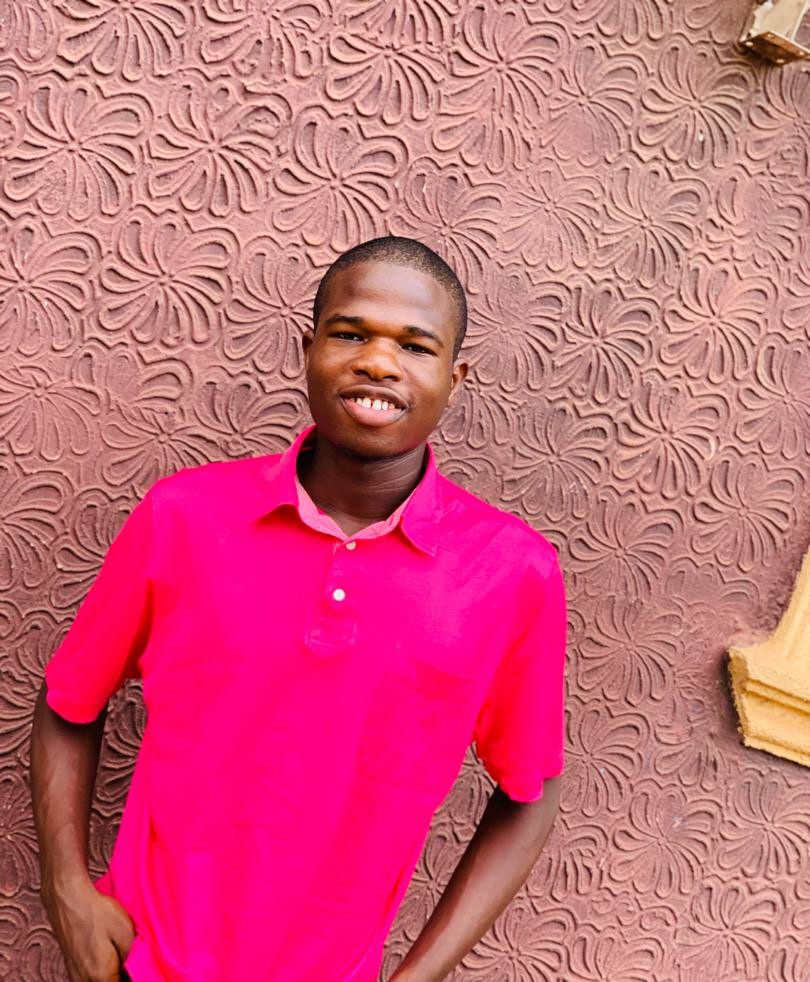

ABOUT US
My name is Agu Kenechukwu Alexander, i am 20 years of age and a computer science student at Federal University Nuduful Aliki-Ikwo Ebonyi state. I am from Enugu Eastern part of Nigeria and my home town is Nuskka. I am a frontend developer with 1-2 years of experince i haven't done much in my tech jounery which frustrated me then i found out about The Zuri program which i appllied for and got since then my life has changed.